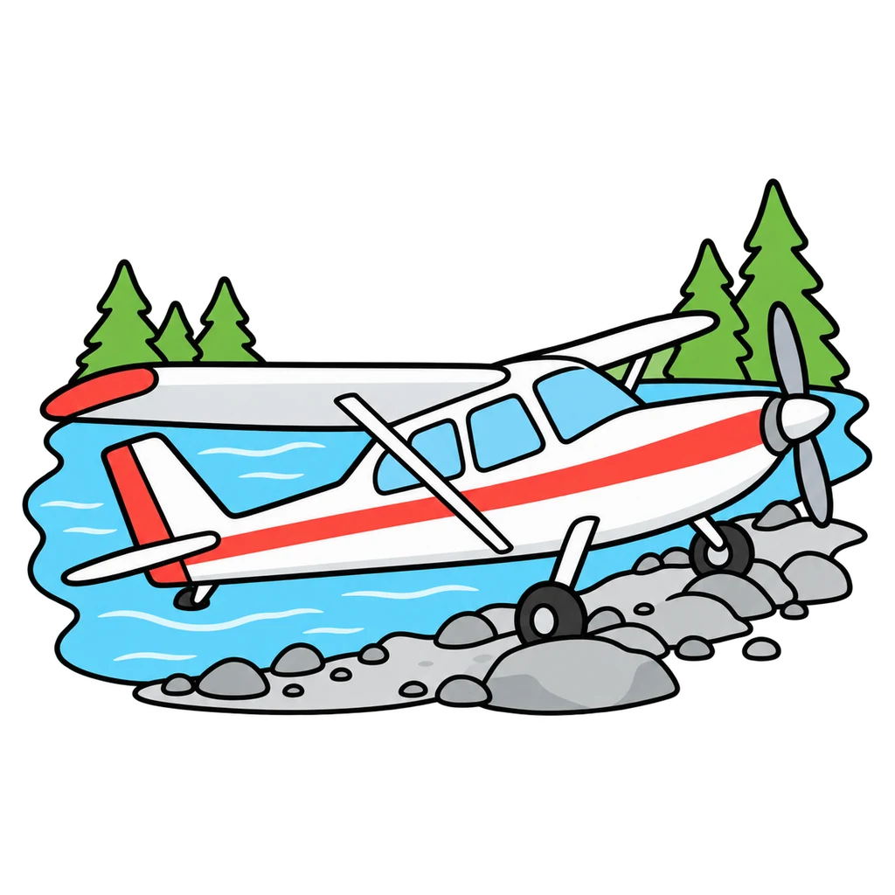
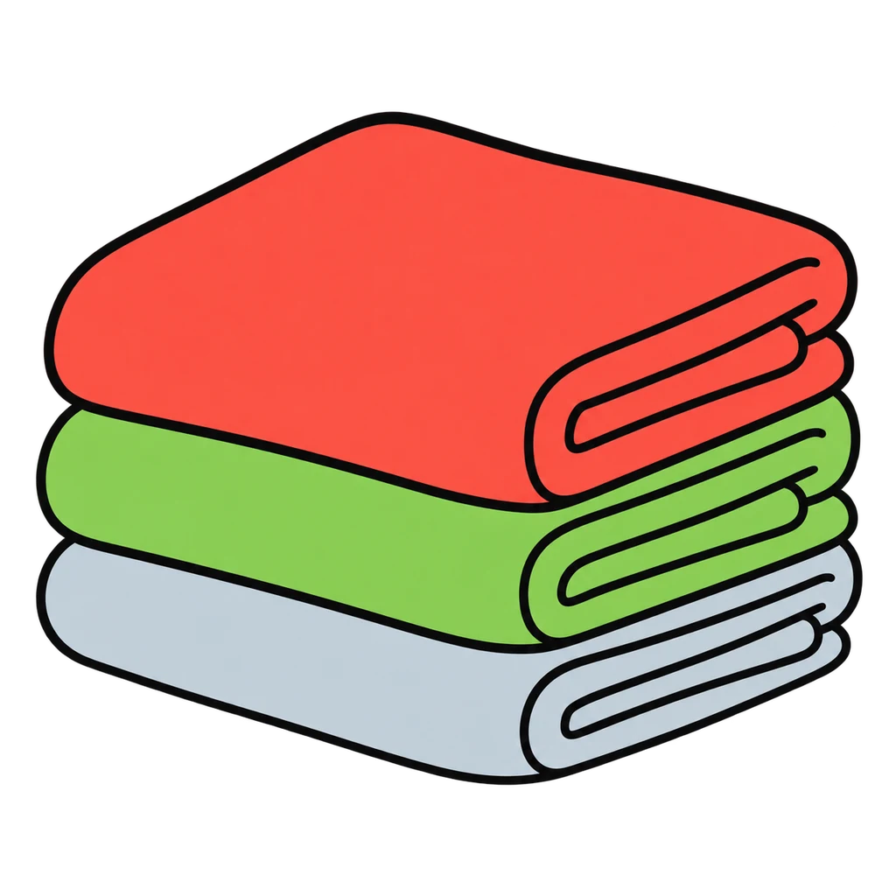
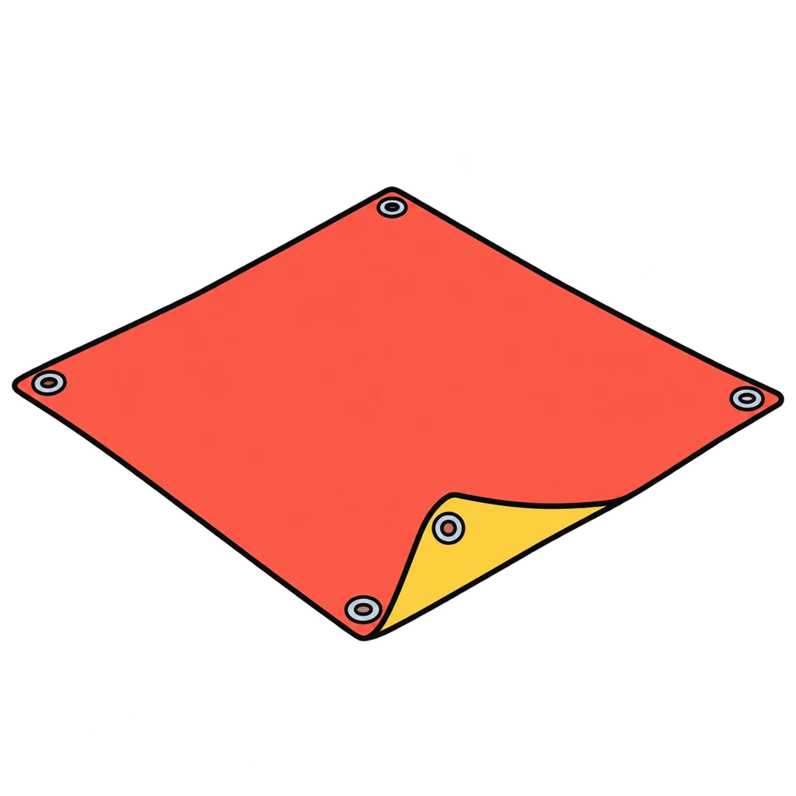
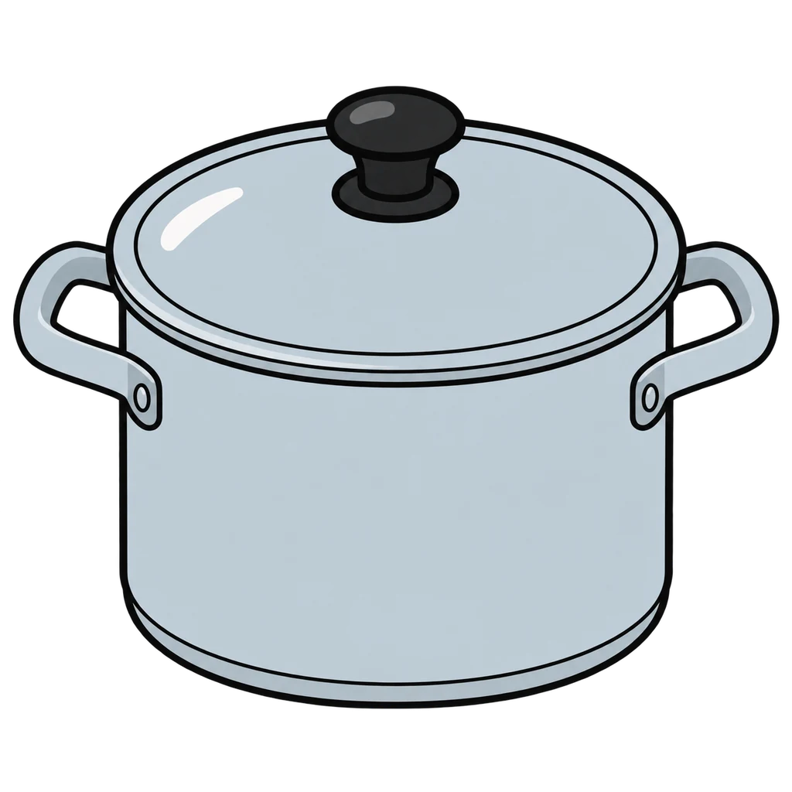
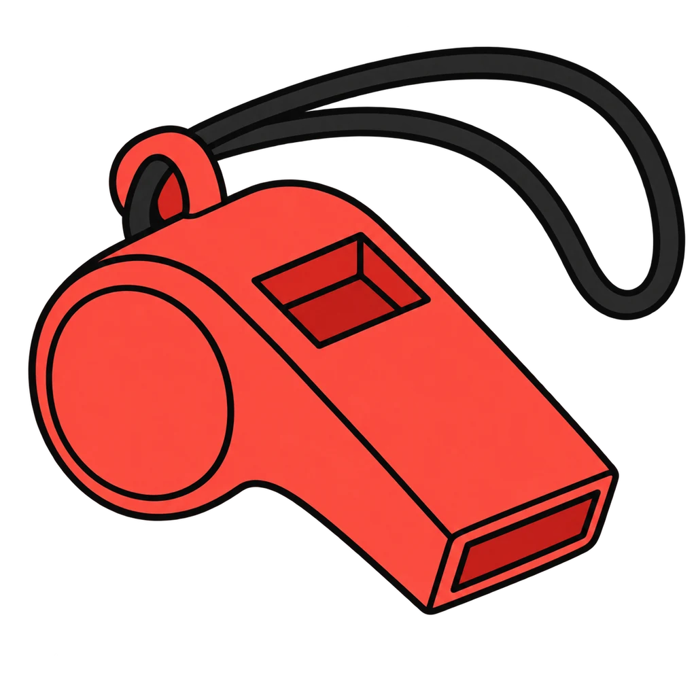
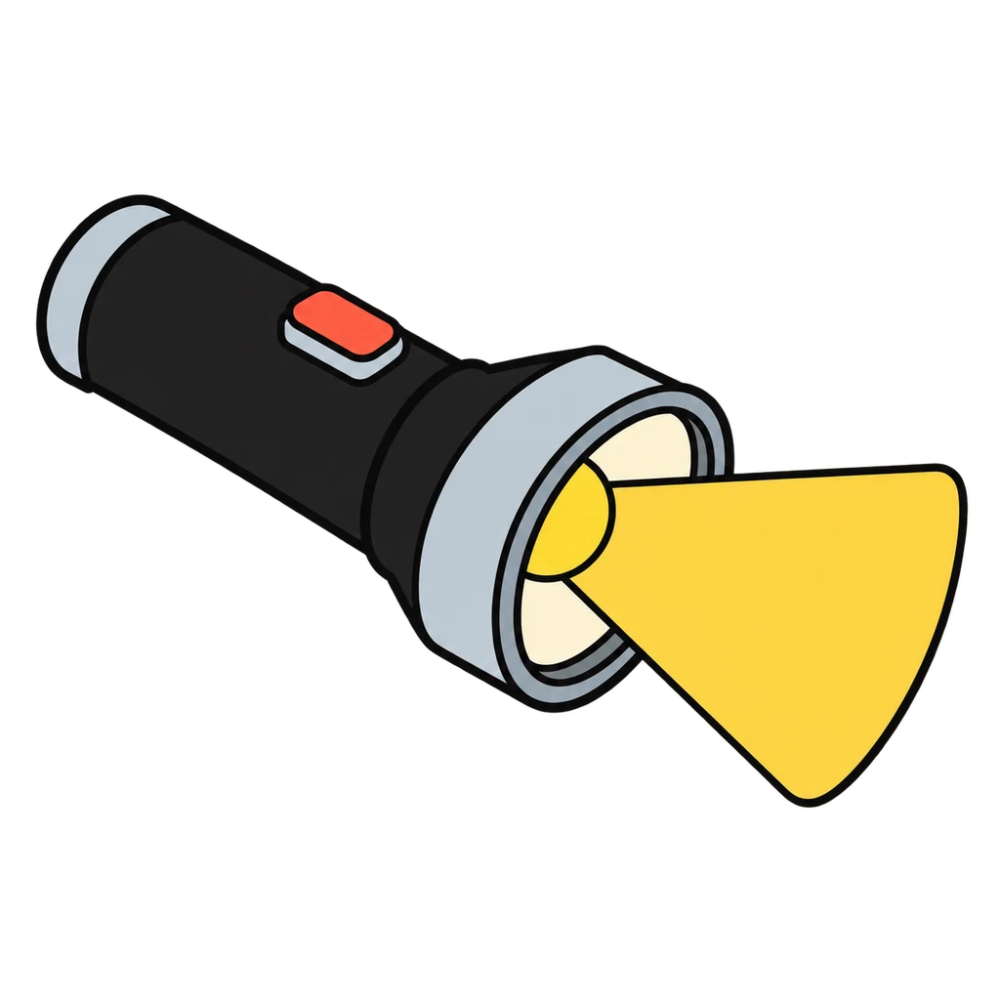
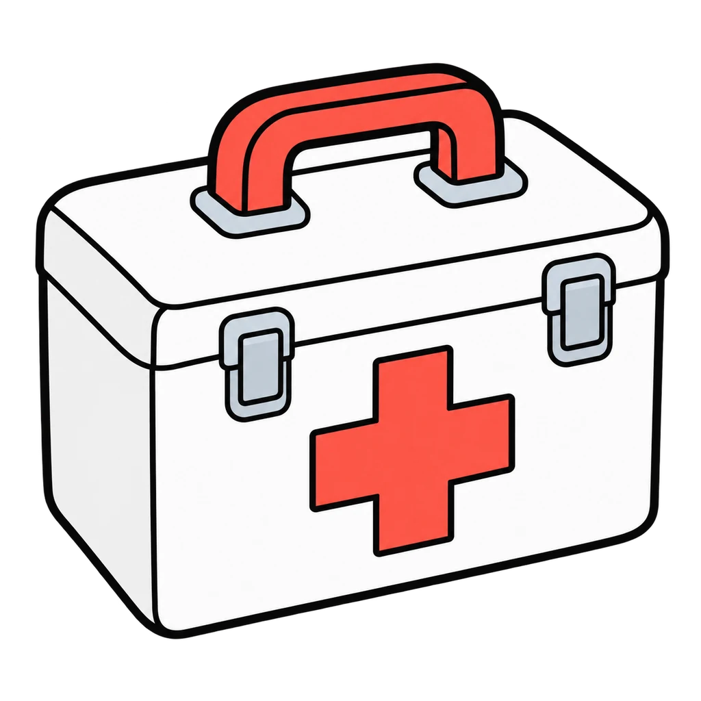
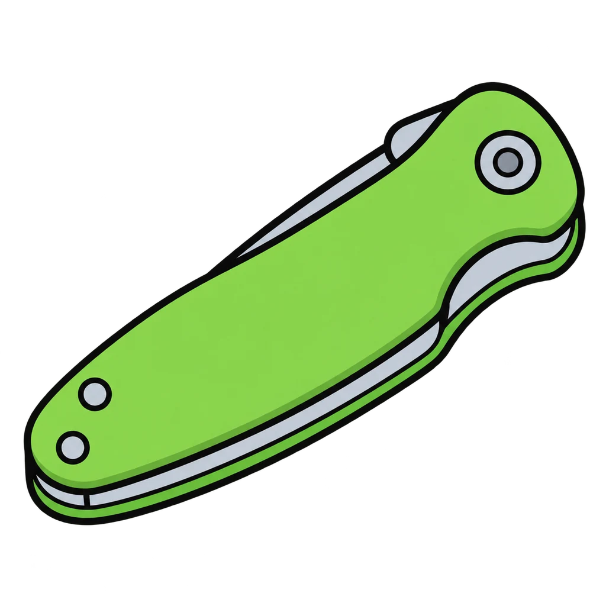
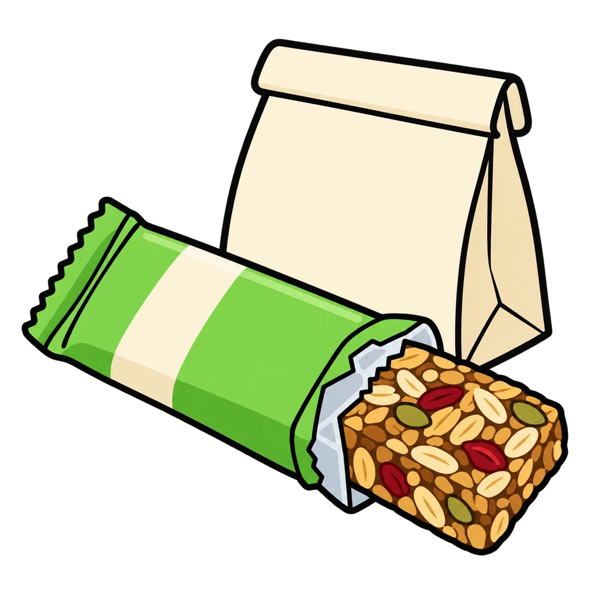
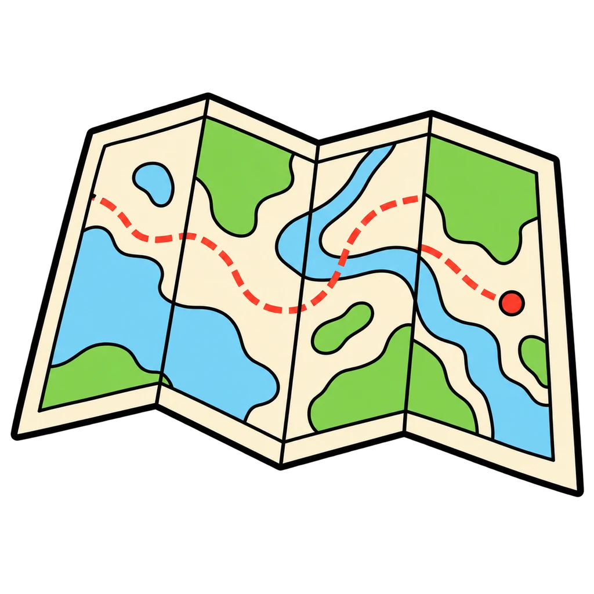

Reviews Lesson 0.3. Reviews Lesson 0.3, the plane crash simulation and the five-step decision model. Round 1 puts the ten items into the expert ranking, and every tap, right or wrong, shows the expert's reason from the handout key, because the reasons are the lesson. Round 2 is the five steps in order, then each step matched to its moment in the simulation, then the rule of threes. Use it the day after the simulation as a do now, and again before the Unit 2 Test (item 6 assesses the five steps) or before any project's five-steps planning box. Say before playing what the lesson says: a team that ranked two neighboring items the other way around with a real reason was not wrong; the game scores the key because a game needs one answer.

Crash Site
The ten survival items appear shuffled. Tap them into the expert ranking from 1 to 10, and each tap shows the reason. Then tap the five decision steps into order and match the rule of threes.
How to play
- A small plane down on the shore of a big lake in the north woods in late October. Everyone walked away with scrapes and bruises. The pilot radioed a distress call and gave the plane's position, so searchers know the general area. The nearest town is forty miles away through thick forest with no road. It is about 35 degrees F in the daytime and drops below freezing at night. The lake water is not safe to drink without boiling. Ten things survived the crash. Rank them from 1 (most important for surviving until searchers find you) to 10.
- This is how we decide in this room all year: a recipe, a budget, a design, a product. Five steps, same words.









Done
The ones to study:
Worth knowing by heart:
- The expert ranking and the three ideas behind it: cold kills first; searchers know where you are, so being seen and heard matters more than moving; walking forty miles through forest in freezing weather is the choice that gets people killed.
- The five steps: name the choice, list options, weigh each against what matters, decide, look back.
- The rule of threes: about three hours without shelter in the cold, three days without water, three weeks without food.